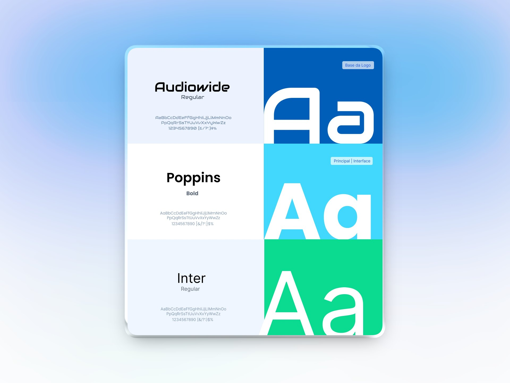

01
Direção de marca
Uma identidade própria, conectada ao Sebrae
A identidade foi pensada desde o início para o ambiente digital. O objetivo era criar uma marca com personalidade própria, mas ainda reconhecível como parte do ecossistema Sebrae.
O conceito
Individualidade + território + proximidade
O símbolo combina uma impressão digital com o contorno do Rio Grande do Norte.
A impressão representa a singularidade de cada negócio, enquanto o território reforça o caráter local e próximo do atendimento.

